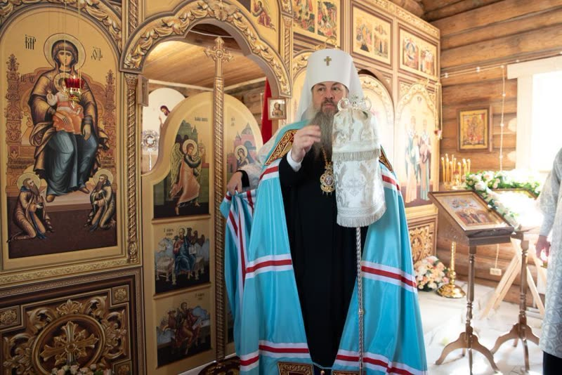

24 мая 2026Малое освящение храма и первая Божественная литургия
Митрополит Пензенский и Нижнеломовский Серафим совершил малое освящение временного храма и возглавил первую литургию. В храм принесены частица мощей святителя Спиридона и его башмачок с острова Корфу.
Читать далее